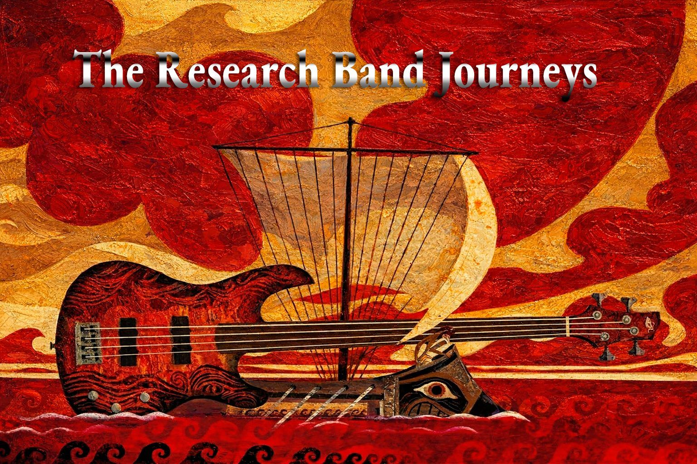

Mi Ilíada

Qué es “Mi Ilíada”
Mi Ilíada es el relato de mi recorrido vital y
creativo contado como una épica íntima. No habla de héroes invencibles ni de victorias
gloriosas, sino de procesos, caídas, aprendizajes y decisiones que han ido dando forma a mi
mirada artística.
Aquí conviven la vida personal y la trayectoria creativa, porque
nunca han sido cosas distintas.
Por qué llamarlo así
En La Ilíada, la guerra no es el centro: lo es la ira, la pérdida, el honor y la fragilidad humana. Del mismo modo, mi Ilíada no enumera logros, sino que narra las tensiones, los conflictos internos y los momentos clave que han construido mi identidad artística.
Cada etapa es una batalla.
Cada obra, una consecuencia.
CUENTOS DE TIEMPOS PASADOS
TALES OF TIMES PAST
Comienzos — The Beginning
La semilla que nadie planta, simplemente crece.
A los catorce, mi hermano mayor traía a casa discos internacionales con una pasión que era contagiosa. Sin ningún ánimo de dedicarme a la música, comencé a imitar las voces de aquellas canciones, a meterme dentro de ellas. Mi abuela, que siempre supo ver lo que yo aún no veía en mí, me regaló una guitarra española. Así, de forma completamente autodidacta, empecé a querer aprender.
Con diecisiete años, junto a unos amigos de juegos de la Plaza del Rey de Madrid — chicos con las mismas inquietudes — formé mi primer grupo: Existence. Queríamos hacer rock experimental progresivo, al estilo de Yes o Genesis. Fueron las primeras horas serias, ya en un local de ensayo. El juego se estaba convirtiendo en algo más.
Aprendizaje — My Learning & Influencers
De todo lo que absorbí y de todos los que sin saberlo me enseñaron.
Una formación completamente autodidacta construida a base de escuchar sin descanso. Cientos de discos de rock, pop y soul de todos los estilos y épocas. Los artistas y grupos que moldearon una forma de entender la música. Las grabaciones de publicidad y los estudios donde empezó el aprendizaje profesional real.
Contratos Discográficos — Record Deals
Cuando la industria llama a tu puerta.
Los fichajes, los sellos, las grabaciones, las decisiones. Ariola, Zafiro, y el camino propio cuando ninguno convenció del todo. Una historia de criterio, libertad artística y persistencia en una industria que pocas veces facilita las cosas.
Proyectos Propios — Own Projects
Cuando decides ser tú mismo sin pedir permiso.
Los proyectos nacidos desde la libertad total. Desde el disco pagado de su propio bolsillo hasta The Research Band y todo el ecosistema creativo actual — senart, dudeduart, TRBand. La evolución de un artista que siempre encontró su propio camino.
El Presente — The Present
La Ilíada continúa.
Un creador en plena actividad. Música, arte digital, tecnología y sensorialidad fusionados bajo la marca SENSORY ARTISTIC. El presente no es un destino, es otro comienzo.